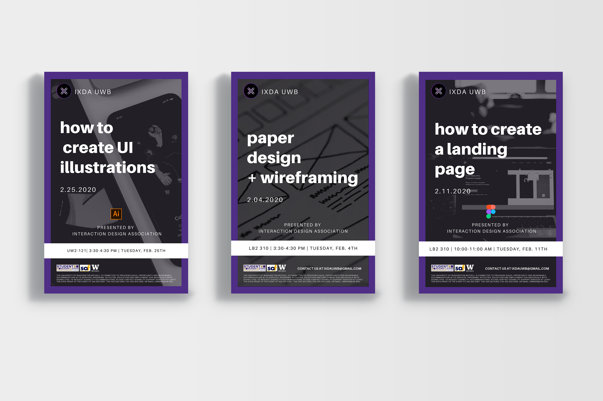
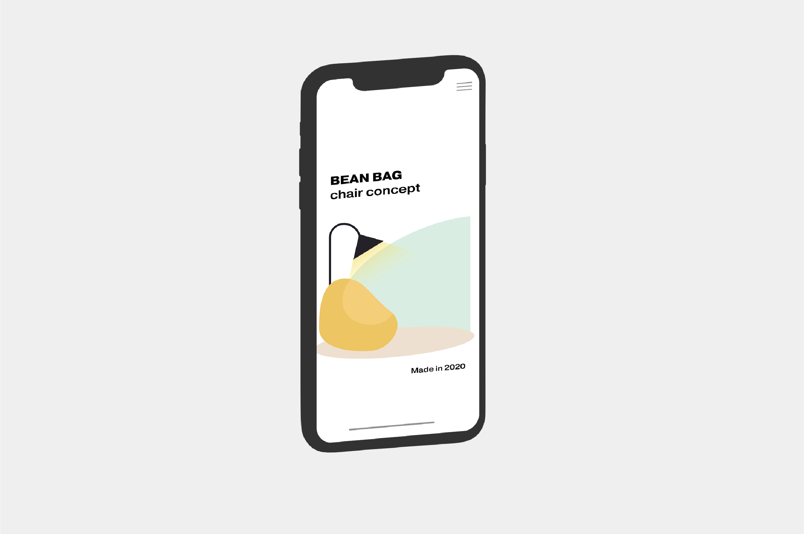

IxDA UWB
Description
Responsible for creating visual materials like posters, presentation templates, social media templates, and merch design. I created the variation of the IxDA logo to be specific to the chapter at the University of Washington Bothell. I also help lead workshops relating to UI/UX, most recently "How To Create UI Illustrations" in Adobe Illustrator.
Role
Chair of Design + Visual Design + Social Media Marketing Strategy
Website
Learn More
- 

- 
-
IxDA UWB
Our mission for IxDA UWB is to connect students across multiple disciplines to foster a design community at UWB. During Spring of 2020 we have emphasized our marketing and advertising of the club through social media. We plan on growing our social media presence to reach more students, as well as getting in contact with professors and advisors to let students know directly about our club and events. As the chair of design, I created a few social media templates to be used on Instagram so the branding stays consistent through our posters, website, and social media. I am using my role in the club to continue building my soft skills, while practicing my hard skills. Knowing how to present information is just as important as the information you are giving. I want to get better at leading people through the design process, which is why I am leading a How to Create UI Illustrations in Adobe Illustrator workshop, walking people through the process of making an illustration from sketch to design implementation
-
How To Create UI Illustrations
This workshop was meant to give attendees the basic tools to get started on their UI illustration creation, inspiring them to create interesting concepts from basic shapes. The first part of the event was presenting why UI illustrations improve UX, which I researched prior to the workshop. I included an article that went further in depth about UI and UX for attendees to access later. Part II of the event was to demo the start to finish process of creating UI illustrations, using basic shapes and tools in Illustrator. In the AI file I gave to students, I included my paper pencil sketch image, a color palette, the finished result, and some basic UI elements. We began by discussing the importance of organizing your layers, to make the overall process easier. Then I explained basic functions of Illustrator such as the Pen tool, anchor points in Shapes, and how to use Shape Masks. I went through the whole process of creating the illustration, stopping to answer technical questions along the way. I followed up our event with a social media post that outlined each step of making the illustration. We recorded the Zoom event so we can post it at a later date on our social media, in a sped up version, which is popular among the UX/UI community on Instagram. Through the use of hashtags on this post, we were able to gain followers and even had people comment on the post, telling us they thought it was amazing and would like to learn how to use Illustrator after seeing what they could create.